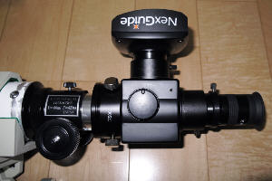

| 赤道儀 | Mark-X, K-ASTECモータードライブ, MTS-3SDI |
| オートガイダ | M-GEN2, Kowa 100mm |
| レンズ | Borg 90FL + reducer (90mm F4.0 f360mm) |
| カメラ | Nikon D7200 (一部 D7000) |
| 撮影 | 2分x8 = 16分 |
| 処理 | DeepSkyStackerでstack。photoshopなどで強調処理 |
| Web | Webには、オリジナル 6000x4000 を1/2縮小。
一部は全体が入るようにさらに縮小。 その後、1800x1200を切り出す。 |
今は昔、五藤光学研究所から「Mark-X」という赤道儀が出ていた。
← コレ (1978年ごろ購入)
今"Mark-X"で検索すると、トヨタ自動車が出るけれど、
五藤の方がはるかに長い歴史がある。
名機ではあるが、周辺機器が対応していないこともあり、使い勝手はイマイチだった。
その後、天文業界にも電子化の波が来て、この時代遅れになった赤道儀も 復活できる可能性が出てきた(2011年ごろ)。まずは、オートガイドに対応していない 昔の専用モータードライブ↑（これはこれで優秀だった）をK-ASTEC製 (コントローラはMTS-3SDI)に交換した。
← ベルトドライブ
バックラッシュがないという話だが、そんなことはない。
緩まないぐらいにきつく張ると回転しない。回転するようにすると、
緩みが少しあり、その分だけ遊びになる。ま、これはやむを得ない。
最初に導入したオートガイダはCelestron NexGuide。
たぶん当時では最も安い、お手軽な形だったんではないかな。
しかし、焦点距離が長い筒に小さいセンサーでは、ガイドできる星を探すのが大変、
といううわさだったので、アイピースも使えるようにフリップミラーもつけた。

ガイド鏡 ：今はなき誠報社 GS-60S
ガイドマウント：KYOEI 低重心ガイドマウント＋鏡筒バンド
その他パーツ ：ビクセンフリップミラー、BORG 7362,7508
だがこの形では合焦しないので、フリップミラーの筒、鏡筒、ドローチューブ、 全部切って短くした。 NexGuideだけならフリップミラーの42mmに直接付くので短くできるのだけれど、 同じ位置にアイピースが付けられない。それに、 ねじ込みだとNexGuideの向きの調整ができない。 アイベルのショートフリップミラーを買っとけばよかったのかも。
しかし実際に使うときは
← こういう状態なので
アイピース（またはガイダ）を上向きに覗くことになる。天頂プリズムは入らない。
やっぱりガイド星を肉眼で見つけるということを諦めるべきだったか。
で、結局
BORGのターレットを中古で入手した。
ミラーがちょっと小さい、アイピースは摩擦で止める方式なので固定ねじがない、
押し込むのに力がいる、ガイダーの向きがずれる可能性がある、等々の問題があるが、
設定してしまえば順調に動く。
そのころに、またもありがたいオートガイダが出てきた。 短いレンズでガイド星がいつでも見つかるといううわさのLacerta M-GEN。
NexGuideの評価は、今にして思えば、「コントローラのボタンの反応が悪い」以外 特に悪いところはなかった。しかし、ガイド星を探すのが大変ということがあって、 M-GENに乗り換えた。f=100mmなので、ざっと4x4倍の視野がある。
感度が良いという話もあったが、そうでもない。同じ星を入れてみると
どちらでもガイドできる。BRI〜10の星は星図では5等ぐらい。
M-GENの利点は、短いレンズが使えて、広い視野の中から適度な星が選べる、
ってことだった。サブピクセルレベルのガイドができることも、
実際には必要ないのかもしれない。
関係あるのかないのかわからないが、 どちらでも表示される星像の形が縦長の楕円なのはなぜだろう。
それから、ガイド中に修正が＋−＋−と繰り返すことも共通している。 aggresivenessの問題なのか、モーターの取り付けぐあいの問題なのか。 ガイド結果に影響がないのは幸いなのだが。 しかし、1分ぐらいは無補正でも良いんだから、オートガイドの補正が そうちょくちょく入るのは変といえば変だ。10秒に1回でも全然問題ないはず。 aggresivenessなのか？
というわけで、現在のMark-Xは左のようになっている。
Mark-Xの弱点である、極軸方位調整は特注のアダプタを製作。
アリミゾはたぶんnorthern cross、特注のアダプタで接続（これも弱点だ）。
この状態でほぼ問題なく稼働できている。
いや問題はあった。ケーブルだらけになること。
モーター2本、カメラ、オートガイダ、ヒーター2本がぶら下がる。
カメラの電源を外部から取ることになればさらに1本。なんだかなあ。
Mark-Xのperiodic motionを自動ガイドで調べてみると、
悪いときで10pixel=50μmぐらい動く。400mmとすると25秒ぐらい(*)。 → ±12秒。
調子の良い時は7pixel=35μmぐらい。18秒。 → ±9秒。
某サイトによれば±8秒もありえるらしいので、やや大きい。
セッティングとかバランスとかの具合の微妙な違いかなあ。
Mark-Xと言えども、小型だし、40年物だし（オーバーホールしたばっかりだけど）、
仕方ないのか。オーバーホールのせいってことはないと思いたい。
Mark-Xは歯が126枚なので、periodic motionは24*60/126≒12分。 撮影は2分x8＝16分で１セットにしているので、周期より長い。 自動ガイド（オートなし）で撮影すると、良いときには点像だが、 悪いときには星像が伸びる。撮影時間を短くする手（30秒x32）もあるが、 オートガイダによる補正の方が気分は良い。